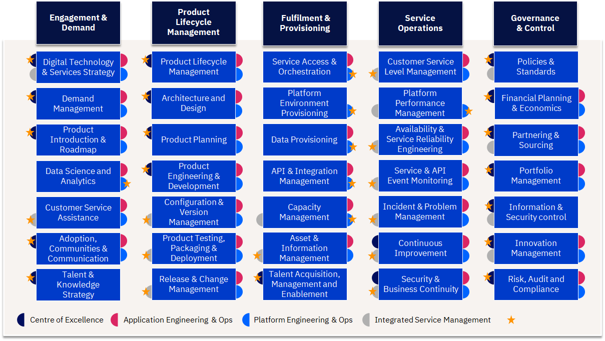
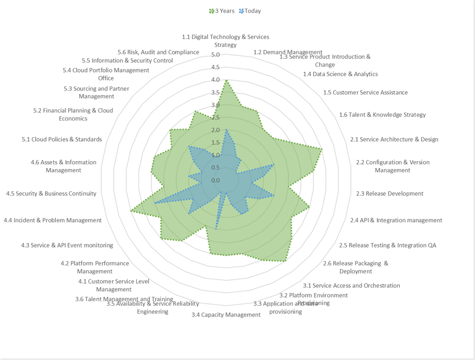

What capabilities do I need to operate to fulfil our vision?
We can only see a short distance ahead, but we can see plenty there that needs to be done.
- Alan Turing
No one is less ready for tomorrow than the person who holds the most rigid beliefs about what tomorrow will contain.
– Wacker, Taylor & Means
Table of Contents
What capabilities are required to deliver digital products & services and platform services?
A broad range of capabilities are required to ideate, develop, support and control digital products and services throughout their lifecycle.
- Engagement & Demand: the capabilities needed to translate business strategy, needs and requests into products and platforms and ensure the right skills are available across the organisation.
- Product Lifecycle Management: the capabilities needed to architect, develop and release both application and platform/technology products and services.
- Fulfillment & Provisioning: the capabilities required to make products and services easily consumable and rapidly available for use when needed.
- Service Operations: the capabilities required to support and operate products and services and ensure they are performant, resilient and meet business and user service levels.
- Governance & Control: the capabilities required to support and operate products and services, and ensure they are performant, resilient and meet business and user service levels.
Many of these capabilities cut across the organisation, but have a ‘centre of gravity’ of where the direction and approach for these is set.
- Many of these capabilities will be required across various areas of the organisation and will play a role in developing and supporting digital products in an effective, flexible and agile way.
- However, there is typically a ‘centre of gravity’ within the organization that helps set the direction, standards and process for how that should be done across the organisation.
- Where this ‘centre of gravity’ resides can vary depending on the maturity of the organisation and the level of autonomy in which parts of the organisation are given.
| Capabilities |
|---|
|  |
Capability Evolution
The key question to ask is how these capabilities are changing for leading digital, platform and cloud enabled organisations? Some capabilities are reinventing themselves and some new capabilities are found to be necessary for optimization that is happening in the operating model of digital enterprises.
Engagement & Demand
| Aspects | Traditional | With Digital, Platforms & Multicloud | Change Implication |
|---|---|---|---|
| Demand | Demand is planned, typically with tight controls & constraints | Variable Demand can be readily supported with less constraint, integrated Bus DevOps | |
| Digital Technology & Services Strategy | Strategy focus is asset & technology-centric. Adoption driven by vendor features on a cyclical basis | Continuous strategy focus is Business Value-Centric (Time to Value, User Experience). Greater focus on Technology adoption timing, experimentation pilots. End to end service execution can be displayed against strategic goals via dashboards with analytics. | Design Thinking applied to Technology Adoptions. Enterprise Architecture re-focus on Bus Architecture & Business Service Components. Sense & respond to Technology maturity changes |
| Demand Management | Focus is typically on IT and project driven demand, IT requirements or major business events. CAPEX as a constraint | Forecast in a different way, focus shifts to business usage behaviors & needs for services. Use automation to detect patterns and capacity need changes. OPEX consumption estimating | Business Partner roles can now focus on strategic demand & value outcomes. Estimate based on Pay-per-usage. Service Catalogs required |
| Product Introduction & Roadmap | Focus is typically on IT and project driven IT requirements, staged releases | Agile based approach, with significant potential for frequent release cycles. But SoR integration mast be managed | New Methods to guide business product owners. New ways of working with IT teams, to plan for change. |
| Data Science and Analytics | Data is managed as a storage cost and constraint. Data not treated as a strategic asset | Data as a Service (DaaS) greatly increases the speed and the capacity to add data services with speed, agility, and with cost impacts transparent. Big Data management disciplines for Cognitive AI and Analytics consumption | Enterprise Architecture teams need to update approaches, patterns and controls to drive DaaS adoption and establish Data platform services |
| Customer Service Assistance | Traditional Helpdesk & support staff, IT help pages | Helpdesk teams need to be able to manage incidents across cloud providers and IT teams. Greater focus on self-support and use of Virtual Assistance. Business Relationship / Account Management disciplines | New procedures, help scripts etc. Virtual Assistance and Robotic Process Automation for high frequency topics |
| Adoption, Communities & Communication | Created in an ad-hoc way usually within organisational silos | Communities and tribes that cut across the organisation focusing on developing core skills, capabilities and collaboration needed to develop digital products and services | Develop clear communities with specialty and focus areas, create a culture of cross organisation working, incentivizing giveback to the organisation |
| Talent & Knowledge Strategy | Traditional model | Skills are evolving rapidly, as cloud platforms and solutions evolve. Heavy reliance on external talent bases | Centre of Excellence approach and Joint Venture & Collabration models to jump start capability change |
Product Lifecycle Management
| Aspects | Traditional | With Digital, Platforms & Multicloud | Change Implication |
|---|---|---|---|
| Product Lifecycle Management | Release cycles are staged and somewhat constrained for the business | Cloud Solutions enable multi-speed IT and increased parallel changes | |
| Architecture and Design | Complex multi-layer architecture planning skills required | Cloud platforms provide a foundation architecture, focus is on re-using existing legacy, and integrating new solutions. Shift to End User experiences | Legacy modernisation skills required. Design Thinking Methods. Ensure regulatory & policy compliance is embedded in the process |
| Product Planning | Long cycle planning, with features needs to be added in elongated release cycles | Clear product ownership driving a priortised backlog that is aligned to changing business needs | More flexible budgeting and planning, with shorter cycle roadmaps dor development |
| Product Engineering & Development | Build and Unit Test monolithic application code | DevOps with Microservices and container based approach. | New development methods & DevOps discipline |
| Configuration & Version Management | Typically a pain point across AD & infrastructure, and rarely well automated | Stronger focus on Config & Version management across environments, enabled through technology. Multi-concurrent versions can be enabled AB Testing | Re-training of staff, tool changes and new working disciplines. |
| Product Testing, Packing & Deployment | Build and Test in dedicated environments – traditional staged approach | DevOps approach: Test with containers and in Production partitions. A/B Testing of features. Service integration experience testing focus (eg: single-sign on). Operations testing for risk | Streamlining the process & automation to avoid quality being a bottleneck. Ensure regulatory & policy compliance is embedded in the process |
| Release & Change Management | Release cycles are staged and somewhat constrained for the business | Business gain potentially radically variable and fast feature deployment cycles. Automation to drive change control compliance - DevOps | Release & deployment management process changes. Controls change. Empowerment of ADM teams - DevOps |
Fulfillment & Provisioning
| Aspects | Traditional | With Digital, Platforms & Multicloud | Change Implication |
|---|---|---|---|
| Service Access & Orchestration | Mixed models | Self Servicing, catalog based approach. Single-sign-on globally | Need for single sign-on & catalog capability across multi-clouds. Corp Policy to manage authorised cloud services, security access rights and self-service clip levels. |
| Platform Environment Provisioning | Developers face long wait times to secure access to IT environments | Developers can self-serve IT environments, improving quality | New policies and processes for developers, and for IT environment managers |
| Data Provisioning | In-house online install catalog | Application Store & Continuous updates Container based approach - Cloud native applications and DB’s are provisioned in to the cloud environment mirroring dev and test environments reducing errors | Current personal supporting provisioning services will have greatly reduced demand. |
| API & Integration Management | Application & Data Integration requires centralised IT teams, intensive effort & bottlenecks in lifecycle | Open approach to Application & Data Integration, decoupled, fewer bottlenecks | Application Development strategy change. API Lifecycle management processes. |
| Capacity Management | Capacity pre-planned and constrained by In-house or Supplier Technology Stacks | Capacity practices alter - depending on the cloud model (Eg: public vs private, on-premise). Dynamic capacity and self-service needs to be controlled to avoid run-away costs, and minimise wastage | New capacity planning and management practices according to IT deployment model. Active lifecycle approach required to reduce ‘Zombie’ accounts and Inactive capacity |
| Asset & Information Management | Assets and Information controlled centrally or dedicated provider. | Asset & Information sit across Cloud Providers - focus of IT is to regulate, audit & optimise. | Change to policies and processes. Use of technology (APIs) to automate data collection. Cost management disciplines for data archive and retrievals |
| Talent Acquisition, Management and Training | Training Courses & Certifications Power User support mechanisms | Continuous Just In Time & experiential learning. Agile communities | Garage Days & Hackathons. Center of Excellence models Social collaboration enablers |
Service Operations
| Aspects | Traditional | With Digital, Platforms & Multicloud | Change Implication |
|---|---|---|---|
| Service Operations | Focus on prioritising issues and problems, housekeeping and maintenance | Focus on continuous operation, prevention and containment, continuous tech refresh | |
| Customer Service Level Management | Standardised SLA models, controlled in-house | SLAs vary across cloud providers. Service integration through Operating Level agreements & automation | Policies need to be established, particularly for mission critical business processes, to avoid business performance issues |
| Platform Performance Management | Performance is internally controlled, but also constrained by pre-build technology stacks | Performance shifts to cloud providers and platform integrators, with varying characteristics. Network latency as a typical constraint. | IT need to adapt monitoring across multicloud providers with a focus on latency issues and new technology standards (eg: containers) |
| Availability & Service Reliability Engineering | IT Support staff model – System Administrators and DBAs. IT manages availability to SLAs, with a focus on scripts, maintenance windows and recover | Prevention based practices – Site Reliability Engineers. Automation to continuously detect, prevent and recover. | Site Reliability Engineering skills and IT Self-Healing script automation. |
| Services & API Event Monitoring | IT incidents handled through predictable supplier based models | Strong focus on prevention, root-case analysis and recovery - DevOps Site reliability Engineering, event management, and skills at Helpdesk level. Increased complexity | Processes need to robust for resolving problems & issues in timely manner. Strong root cause skills |
| Incident & Problem Management | ITIL based support approach | Emphasis on early detection and prevention, auto-recovery | Embed Site Reliability Engineering. Auto-recovery, Event Analytics. Integrate with legacy operations |
| Continuous Improvement | Done through lessons learnt at the end of major programmes or initiatives | Ingrained as part of the fabric of working, with a culture that seeks out improvement. SRE capability constantly seeking to automate and reduce TOIL | Clear metrics to measure improvements, culture and incentives to delver improvements |
| Security & Business Continuity | Security enablers to prevent vulnerability (eg; virus scan). Manual fall backs for continuity | Continuous threat posture, with security operating across boundaries, detecting trends and weakness ahead of major events. Dynamic continuity changes & Robust fallback | Automation & AI to pre-empt the risk. Platform standards to minimize variation vulnerability |
Governance & Control
| Aspects | Traditional | With Digital, Platforms & Multicloud | Change Implication |
|---|---|---|---|
| Policies & Standards | IT Policies are Asset and technology Centric, for internal IT teams. Policies and standards are relatively static | Cloud IT Policies & standards are utilized by the Business, suppliers and external users, enforced by central governing teams. Standards are platform and As-A-Service centric. Standards continuously evolve with new Technology | Policies & Standards to enable greater Self-Service, by external parties (Eg: APIs), and for platform standardization. Focus on continuous updates |
| Financial Planning & Cloud Economics | Fixed period planning cycles (annual, per project), with significant investments for asset refresh | The IT service framework now prices IT Services incrementally from the IT vendors to get accurate Operational Expense forecasting. Consumption driven planning with Business Product Owners | IT budget planning processes change. Project estimating & planning process changes. Budget allocation & chargeback models change, aligning to Business Product Owners - need to be handled carefully. Handling business case viability challenges |
| Partnering & Sourcing | IT supplier based models. Value assessed on asset basis. Long procurement cycles | “Vendors” are replaced with partners who are tied in seamlessly to the essential delivery of IT services. Value assessed on business outcomes. Rapid proof of value procurement cycles | Procurement and sourcing business rules need to be modified to reflect the new opex nature of cloud operations. |
| Portfolio Management | PO is driving mixed model of CAPEX programmes & project releases. Traditional PPM | Project staffs will plan projects incrementally and measure value for incremental progress. ROI metrics will be easier to acquire and justify. | Training of PMO staff’s in agile management techniques is required. Governance changes required |
| Information & Security control | Internal controls are managed against assets and | Security polices and controls are proven for each cloud service fielded. For industries with regulatory concerns, security works ahead of ahead of new imitative to show the impact of cloud tools and procedures. | Security Organizations need extensive education/exposure to how cloud operations should be tailored for security polices and control, |
| Risk, Audit and Compliance | Control is managed centrally, and controls are typically transparent | Cloud Service Provider contracts assure compliance. Understanding the compliance and regulations for using public cloud providers requires clients working with their providers to validate their deployment patterns. | Proactively work with compliance authorities to implement new policies and control’s - but may stretch the talent and experience of incumbent personnel, such as for GDPR issues. |
How do we transition?
Assessing the maturity of these capabilities helps determine the areas for focus of operating model change and sets a baseline for measuring improvement. Undertaking a maturity assessment across these capabilities provides a number of benefits to defining the future operating model transformation
- Bring visibility to current practices adoption
- Identifying and prioritise gaps in existing capabilities
- Expose pain points
- Provide a future view of ambitions and goals with to help focus capability transformation
- Structure the transformation priorities
- Target quick wins and early proof points
Additionally, this maturity assessment case act as a ‘yard stick’ to measure progress of the operating model transformation, alongside other KPIs that help support the measurement of each capability.
| TOM Capability Maturity |
|---|
|  |